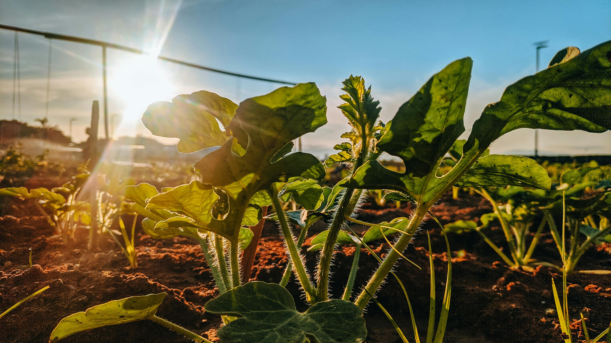
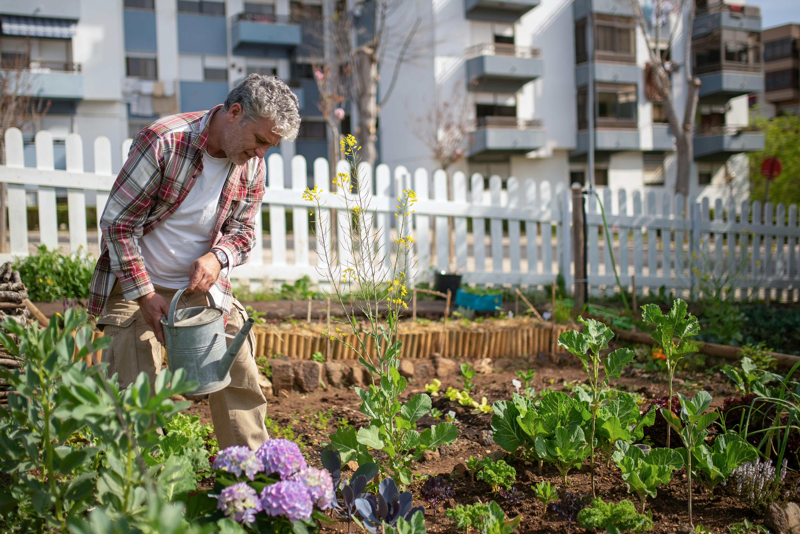

Técnicas de cultivo
Conteúdos sobre cultivo, cuidados com plantas e organização da produção.
Em breve
Área exclusiva para produtores participantes da rede Horthome.

Acesse conteúdos preparados para apoiar o crescimento, a organização e o desenvolvimento da sua produção.

Conteúdos sobre cultivo, cuidados com plantas e organização da produção.
Em breve
Estratégias para organização financeira, vendas e desenvolvimento local.
Em breve